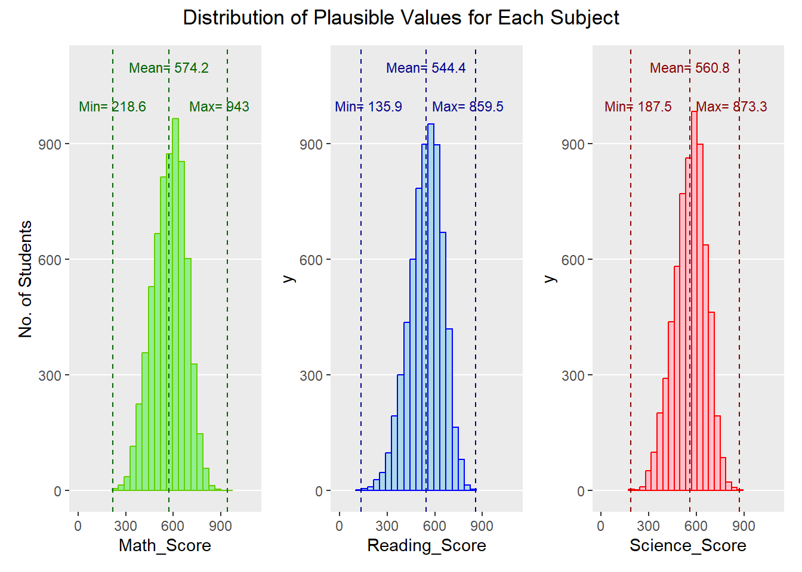
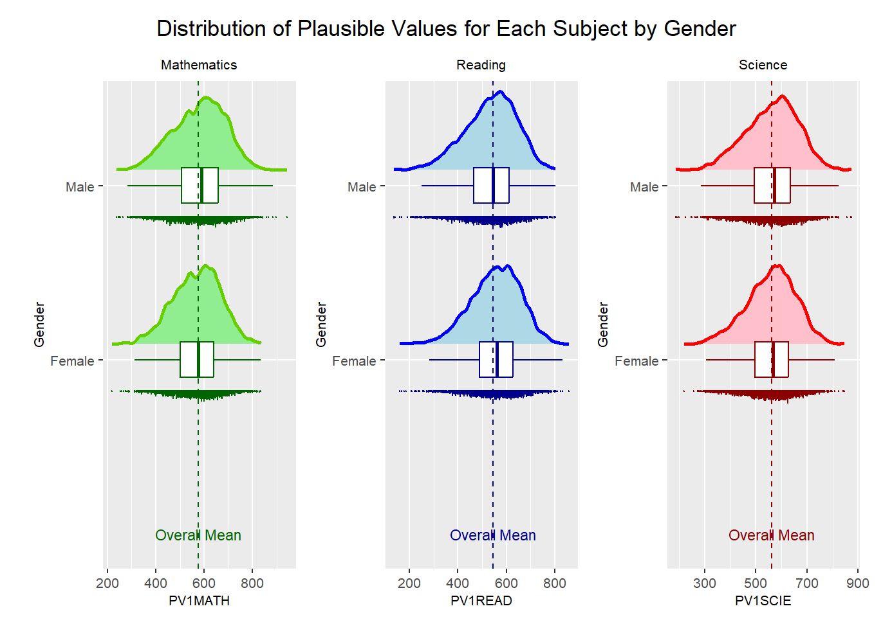
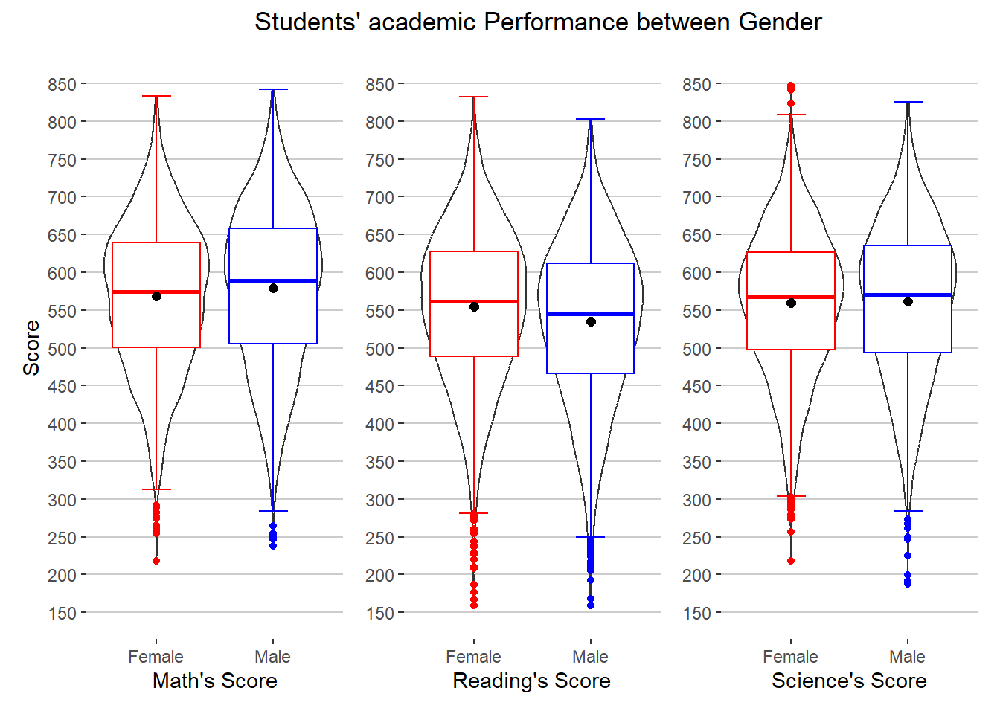
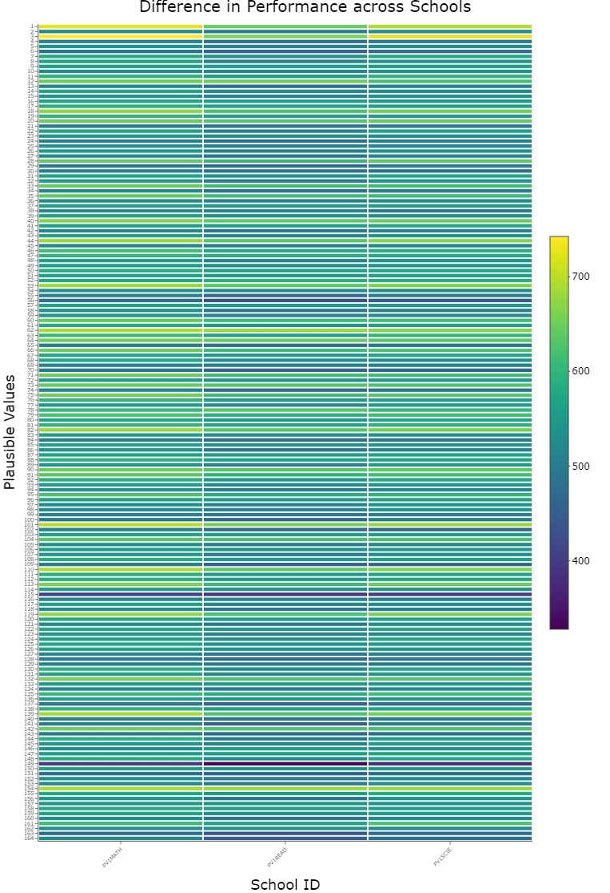
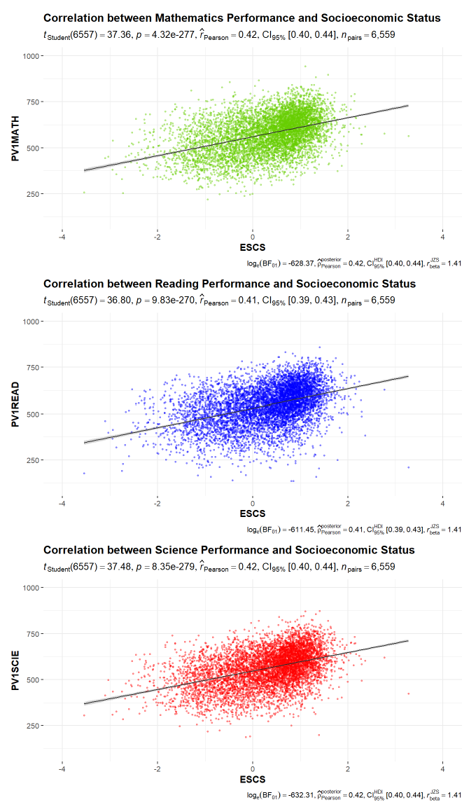

pacman::p_load(tidyverse, haven, patchwork,ggrepel,ggthemes)Take-home_Ex2
1. Overview
I selected a classmate’s Take-home Exercise 1 contribution for this Take-home Exercise 2 and evaluated the charts for clarity and aesthetic. Additionally, the original design was recreated utilizing the best practices and data visualization techniques covered in the first two lectures.
2. Getting Started
2.1 Loading R package
Let’s load the libraries and R package needed for this assignment using pacman::p_load()function:
2.2 Importing data
The code chunk below uses ‘read_sas()’ of ‘haven’ to import PISA data into R environment.
stu_qqq <-read_sas("data/cy08msp_stu_qqq.sas7bdat") stu_qqq_SG <-stu_qqq %>%
filter(CNT == "SGP")write_rds(stu_qqq_SG,"data/stu_qqq_SG.rds")stu_qqq_SG <-
read_rds("data/stu_qqq_SG.rds")3. Critique 1
3.1 Original Design
The original design is shown below

Usage of Histogram is reasonable and appropriate as it fulfill the objectives of demonstrating the distribution of math, reading, and science score. However, this chart can be improved in following criteria.
3.2 Clarity
(a) Graph Title
The title is concise and can reflect the content of histogram. However, it might be not clear and straightforward enough for people have a fast understanding when they read it since there is words that shows certain level of conjecture.
(b) Axes Labeling
It is sometimes the case that column names like PVmath and y will not make sense to users while viewing the charts, thus new axes labels can be added to graphs instead of utilizing the same name as the columns.
3.3 Aesthetics
(a) Redundant title
Since the name of the x-axis already can represent the content of the graph, it is not necessary to add the sub-title.
(b) Gridlines-Vertical
Since the original graph already marked down the max, min, and mean value, besides the tick marks already marked on the x-axis, it is not necessary to have the vertical gridline.
3.4 Sketch of Proposed Design
Rough sketch of proposed design is shown below
3.5. Rename the variable
stu_qqq_1<-stu_qqq_SG %>%
select(PV1MATH,PV1READ, PV1SCIE)%>%
rename(c(Math_Score= "PV1MATH",
Reading_Score="PV1READ",
Science_Score="PV1SCIE"))3.6 Final Design
After conduct the changes list above, here is the final design:
maths_mean <- mean(stu_qqq_1$Math_Score)
maths_min <- min(stu_qqq_1$Math_Score)
maths_max <- max(stu_qqq_1$Math_Score)
read_mean <- mean(stu_qqq_1$Reading_Score)
read_min <- min(stu_qqq_1$Reading_Score)
read_max <- max(stu_qqq_1$Reading_Score)
science_mean <- mean(stu_qqq_1$Science_Score)
science_min <- min(stu_qqq_1$Science_Score)
science_max <- max(stu_qqq_1$Science_Score)
hist_maths <- ggplot(data = stu_qqq_1,
aes(x = Math_Score)) +
geom_histogram(bins = 20,
boundary = 100,
color = "chartreuse3",
fill = "lightgreen") +
geom_vline(aes(xintercept = maths_mean),
color = "darkgreen",
linetype = "dashed") +
geom_vline(aes(xintercept = maths_min),
color = "darkgreen",
linetype = "dashed") +
geom_vline(aes(xintercept = maths_max),
color = "darkgreen",
linetype = "dashed") +
annotate("text", x = maths_mean, y = 1100,label = paste("Mean=", round(maths_mean, 1)), size = 3, color = "darkgreen") +
annotate("text", x = maths_min, y = 1000,label = paste("Min=", round(maths_min, 1)), size = 3, color = "darkgreen") +
annotate("text", x = maths_max - 50, y = 1000,label = paste("Max=", round(maths_max, 1)), size = 3, color = "darkgreen") +
coord_cartesian(xlim = c(0, 1100),
ylim = c(0, 1100)) +
theme(panel.grid.minor = element_blank(),
panel.grid.major.x = element_blank()) +
scale_y_continuous("No. of Students")
hist_read <- ggplot(data = stu_qqq_1,
aes(x = Reading_Score)) +
geom_histogram(bins = 20,
boundary = 100,
color = "blue",
fill = "lightblue") +
geom_vline(aes(xintercept = read_mean),
color = "darkblue",
linetype = "dashed") +
geom_vline(aes(xintercept = read_min),
color = "darkblue",
linetype = "dashed") +
geom_vline(aes(xintercept = read_max),
color = "darkblue",
linetype = "dashed") +
annotate("text", x = read_mean, y = 1100,label = paste("Mean=", round(read_mean, 1)), size = 3, color = "darkblue") +
annotate("text", x = read_min + 50, y = 1000,label = paste("Min=", round(read_min, 1)), size = 3, color = "darkblue") +
annotate("text", x = read_max - 50, y = 1000,label = paste("Max=", round(read_max, 1)), size = 3, color = "darkblue") +
coord_cartesian(xlim = c(0, 1100),
ylim = c(0, 1100)) +
theme(panel.grid.minor = element_blank(),
panel.grid.major.x = element_blank())
hist_science <- ggplot(data = stu_qqq_1,
aes(x = Science_Score)) +
geom_histogram(bins = 20,
boundary = 100,
color = "red",
fill = "pink") +
geom_vline(aes(xintercept = science_mean),
color = "darkred",
linetype = "dashed") +
geom_vline(aes(xintercept = science_min),
color = "darkred",
linetype = "dashed") +
geom_vline(aes(xintercept = science_max),
color = "darkred",
linetype = "dashed") +
annotate("text", x = science_mean, y = 1100,label = paste("Mean=", round(science_mean, 1)), size = 3, color = "darkred") +
annotate("text", x = science_min + 50, y = 1000,label = paste("Min=", round(science_min, 1)), size = 3, color = "darkred") +
annotate("text", x = science_max - 50, y = 1000,label = paste("Max=", round(science_max, 1)), size = 3, color = "darkred") +
coord_cartesian(xlim = c(0, 1100),
ylim = c(0, 1100)) +
theme(panel.grid.minor = element_blank(),
panel.grid.major.x = element_blank())
hist_maths + hist_read + hist_science +
plot_annotation("Distribution of Plausible Values for Each Subject",
theme = theme(plot.title = element_text(hjust = 0.5)))
4. Critique 2
4.1 Original Design
The original design is shown below

4.2 Clarity
(a) Redundant plot- violin + boxplot
In this raincloud plot, it demonstrate the probability density and key summary statistics in a diverse format which including scatter, boxplot, and density. For this case, the objective is to see if there is difference on academic performance between genders. From looking this chart, it might confuse readers where to start from, so they could not able to get a fast conclusion. Therefore, a combination of a violin and a boxplot maybe can help to generate a clearer visualization.
(b) Axes Labeling
It is sometimes the case that column names like PVmath and y will not make sense to users while viewing the charts, thus new axes labels can be added to graphs instead of utilizing the same name as the columns.
(c) Mean score presentation
Instead of only line without specific number, it will be more clear to readers after put the specific score for mean.
4.3 Aesthetics
(a) Change of layout
A vertical layout of the boxplot to compare the mean of scores could be better fit readers’ habits.
4.4 Sketch of Proposed Design
Rough sketch of proposed design is shown below
4.5 Final Design
After conduct the changes list above, here is the final design:
stu_qqq_2<-stu_qqq_SG %>%
select(PV1MATH,PV1READ, PV1SCIE, ST004D01T)%>%
rename(c(Math_Score= "PV1MATH",
Reading_Score="PV1READ",
Science_Score="PV1SCIE",
Gender = "ST004D01T"))%>%
mutate(Gender = recode(Gender,
"1" = "Female",
"2" = "Male"))
stu_qqq_2$Gender <- as.factor(stu_qqq_2$Gender)gendermath <- ggplot(data = stu_qqq_2,
aes(x = Gender,
y = Math_Score)) +
geom_violin() +
stat_boxplot(geom = "errorbar",
width = 0.25,
color = c("red",'blue'))+
geom_boxplot(color = c("red",'blue')) +
geom_point(stat = "summary",
fun.y = "mean",
colour = "black",
size = 2) +
labs(x = "Math's Score") +
scale_y_continuous("Score", breaks = seq(150,850,50), limits = c(150,850))+
theme(panel.background = element_rect(fill="white",colour="white"),
panel.grid.major = element_line(color = "grey80"),
panel.grid.minor = element_blank(),
panel.grid.major.x = element_blank())
genderreading <- ggplot(data = stu_qqq_2,
aes(x = Gender,
y = Reading_Score)) +
geom_violin() +
stat_boxplot(geom = "errorbar",
width = 0.25,
color = c("red",'blue'))+
geom_boxplot(color = c("red",'blue')) +
geom_point(stat = "summary",
fun.y = "mean",
colour = "black",
size = 2) +
labs(x = "Reading's Score") +
scale_y_continuous(NULL, breaks = seq(150,850,50), limits = c(150,850))+
theme(panel.background = element_rect(fill="white",colour="white"),
panel.grid.major = element_line(color = "grey80"),
panel.grid.minor = element_blank(),
panel.grid.major.x = element_blank())
genderscience <- ggplot(data = stu_qqq_2,
aes(x = Gender,
y = Science_Score)) +
geom_violin() +
stat_boxplot(geom = "errorbar",
width = 0.25,
color = c("red",'blue'))+
geom_boxplot(color = c("red",'blue')) +
geom_point(stat = "summary",
fun.y = "mean",
colour = "black",
size = 2) +
labs(x = "Science's Score") +
scale_y_continuous(NULL, breaks = seq(150,850,50), limits = c(150,850))+
theme(panel.background = element_rect(fill="white",colour="white"),
panel.grid.major = element_line(color = "grey80"),
panel.grid.minor = element_blank(),
panel.grid.major.x = element_blank())
gendermath+genderreading+genderscience+ plot_annotation(
title = 'Students\' academic Performance between Gender',
theme = theme(plot.title = element_text(hjust = 0.6))
)
5. Critique 3
5.1 Original Design
The original design is shown below

5.2 Clarity
(a) Alternative chart type for better presentation
Current chart type it’s inappropriate in this question, since heatmap it’s specifically build for categorical data. In this case, Student’s score it’s a continuous data and the number of school ID its too many to visualize in a clear and straightforward way. Bar chart might can consider to use after recode students’s performance score into different score range which is categorical data.
(b) Axes Labeling
It is sometimes the case that column names like PVmath and y will not make sense to users while viewing the charts, thus new axes labels can be added to graphs instead of utilizing the same name as the columns.
5.3 Aesthetics
(a) Redundant title
Since the name of the x-axis already can represent the content of the graph, it is not necessary to add the sub-title.
(b) Gridlines-Vertical
Since the original graph already marked down the max, min, and mean value, besides the tick marks already marked on the x-axis, it is not necessary to have the vertical gridline.
5.4 Sketch of Proposed Design
Rough sketch of proposed design is shown below
5.5 Final Design
After conduct the changes list above, here is the final design:
6. Critique 4
6.1 Original Design

6.2 Clarity
(a) Display position of R square
Since the R square represent the strength of the correlation, the position of the R square could be move to next to the linear line for reader to get a quick view of the statistic of the scatter plot to understand the strength.
(b) Axes Labeling
It is sometimes the case that column names like PVmath and ESCS will not make sense to users while viewing the charts, thus new axes labels can be added to graphs instead of utilizing the same name as the columns.
6.3 Aesthetics
(a) Make correlation line more pronounce
For the reading score and social economic status score, the correlation line is having difficulty to read. Therefore, making the line thicker could solve the problem.
6.4 Sketch of Proposed Design
Rough sketch of proposed design is shown below
6.5 Final Design
After conduct the changes list above, here is the final design: